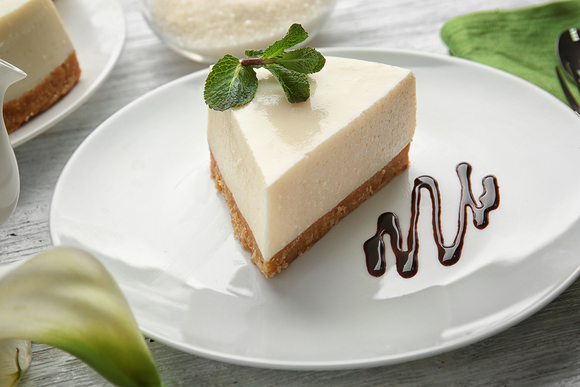
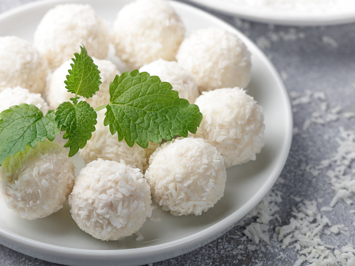
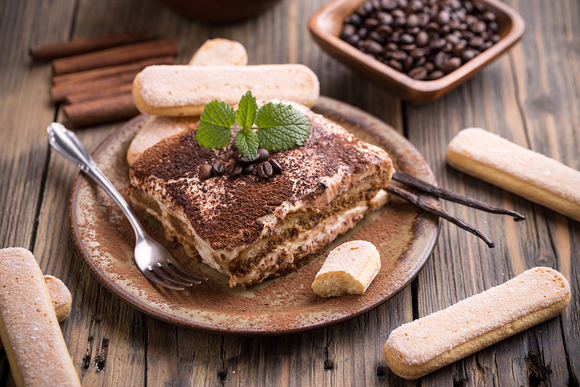
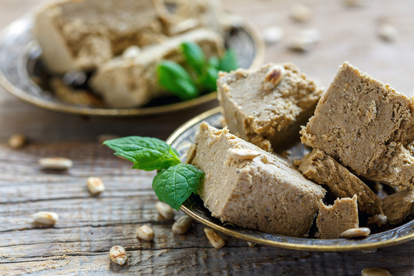
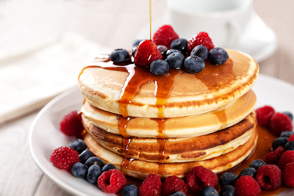
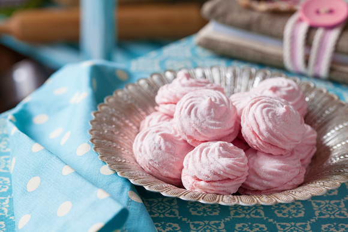

Чизкейк
Рецепт Чизкейка
Ингредиенты:
- печенье — 400 г
- сливочное масло — 150 г
- маскарпоне — 600 г
- сливки 33–35% — 500 мл
- сахарная пудра — 150 г
- молоко — 100 мл
- вода — 100 мл
- желатин — 24 г
Способ приготовления:
- Песочное тесто измельчите при помощи блендера или поломайте руками до состояния крошки. Смешайте с мягким сливочным маслом.
- Наполните получившейся массой разъемную форму и хорошо утрамбуйте.
- Соедините маскарпоне с сахарной пудрой и сливками. Хорошо взбейте сливочно-сырную смесь.
- Смешайте желатин и воду. Когда масса набухнет, влейте молоко, которое достаточно просто подогреть, не доводя до кипения. Хорошо размешайте желатин в жидкости, чтобы он полностью растворился. Влейте к сыру и сливкам. Снова взбейте.
- Выложите в форму получившееся суфле — прямо на корж из печенья. Поставьте десерт в холодильник до застывания сырно-сливочного слоя, а потом украсьте торт по своему вкусу. Вы можете полить его шоколадной глазурью, ягодным вареньем, выложить сверху кусочки фруктов, посыпать шоколадной или кокосовой стружкой.

Конфеты Рафаэлло
Рецепт конфет Рафаэлло
Ингредиенты:
- сгущенное молоко — 1 банка
- сливочное масло — 50 г
- кокосовая стружка — 200 г
- миндаль — 80 г
- ванильный сахар — 10 г
- коньяк — 1 ч. л.
Способ приготовления:
- Сгущенное молоко смешайте с размягченным сливочным маслом.
- Добавьте ванильный сахар и кокосовую стружку. По желанию влейте немного коньяка для приятного аромата.
- Хорошо перемешайте конфетную массу и поставьте в холодильник примерно на сутки.
- На следующий день формируйте из загустевшего крема шарики и поместите внутрь каждого «колобка» миндальный орешек.
- Обваляйте конфеты в кокосовой стружке и выложите их на блюдо, а потом снова охладите.

Тирамису
Рецепт Тирамису
Ингредиенты:
- сливки 33–35% — 250 мл
- маскарпоне — 250 г
- сахар ванильный — 10 г
- печенье савоярди — 200 г
- кофе свежесваренный — 1 стакан
- шоколад темный — 70 г
Способ приготовления:
- Миксером взбейте сливки до пышности. Добавьте маскарпоне и ванильный сахар. Продолжате взбивать до объединения ингредиентов.
- Сварите стакан зернового кофе и подготовьте савоярди. Не просто обмакивайте печенье в напиток, а дайте ему немного в нем полежать, чтобы будущая основа под тирамису была мягкой.
- Выложите слой печенья в форму, покройте половиной крема, потом сделайте точно такой же второй слой и размажьте по нему остатки крема.
- Посыпьте изделие какао-порошком или шоколадной стружкой и поставьте на 2 часа в холодильник.

Панна котта
Рецепт Панна котты
Ингредиенты:
- сливки 33–35% — 300 мл
- апельсины — 2 шт.
- сахар — 50 г
- кипяток — 50 мл
- желатин — 15 г
- ванильный экстракт — 2 капли
Способ приготовления:
- Желатин залейте кипятком и оставьте на 5 минут.
- В небольшом сотейнике нагрейте сливки и выдавите сок из 1,5 апельсинов. Как только на поверхности сливок появятся пузырьки, снимайте их с огня, доводить до кипения не нужно.
- Добавьте 1,5 ст. л. сахара и ванильный экстракт, а потом влейте половину желатиновой массы и хорошо перемешайте. Заполните сливками 2/3 бокалов или креманок, а потом поставьте их на 30 минут в холодильник.
- Смешайте оставшуюся желатиновую смесь с апельсиновым соком и 0,5 ст. л. сахара. Как только сливочная основа в бокалах станет плотной и упругой, вылейте на нее апельсиновый сок и снова поставьте на холод.
- Украсьте десерт ломтиками апельсинов и насладитесь его нежностью.

Подсолнечная халва
Рецепт Подсолнечной халвы
Ингредиенты:
- семена подсолнечника — 200 г
- мука пшеничная — 150 г
- подсолнечное масло — 100 мл
- сироп — 100 мл
Способ приготовления:
- Подсушите на сковороде 200 г очищенных семечек, добавьте 150 г муки и слегка подрумяньте ее.
- Измельчите семечки с мукой в блендере или кухонном комбайне и влейте в них около 130 мл подсолнечного масла и 100 мл любого сиропа. Вы также можете сварить сироп из 80 мл воды и 1 стакана сахара, пока он полностью не растворится.
- Еще раз хорошо измельчите смесь, а потом переложите ее в форму и утрамбуйте. Халва готова!

Торт-суфле
Рецепт Торта-суфле
Ингредиенты:
- шоколадное печенье — 200 г
- сливочное масло — 50 г
- сметана — 400 г
- сахар — 100 г
- какао — 70 г
- молоко — 100 мл
- вода — 100 мл
- желатин — 10 г
- бананы — 2 шт.
- шоколад — 70 г
Способ приготовления:
- Измельчите в блендере шоколадное печенье и смешайте его с растопленным сливочным маслом. Застелите разъемную форму бумагой для выпечки, выложите в нее массу из печенья, утрамбуйте и поставьте в холодильник для застывания на 15 минут.
- Желатин залейте водой комнатной температуры. Через 15 минут подогрейте его на водяной бане, пока он полностью не растворится. Ни в коем случае не кипятите!
- Смешайте молоко, сахар и какао, немного прогрейте на среднем огне в течение 3 минут и соедините со сметаной. Влейте в эту смесь разбухший желатин и все хорошо перемешайте.
- Бананы разрежьте вдоль, а потом порубите половинки еще на 4 части.
- Достаньте из холодильника форму с застывшим коржом, выложите на него бананы и залейте шоколадным кремом. Поставьте готовый десерт в холодильник еще на 5–6 часов.
- Украсьте стружкой из шоколада и веточкой мяты. Зовите гостей, чтобы разделить свою радость с другими!

Пирожное Картошка
Рецепт пирожного Картошка
Ингредиенты:
- сухари — 330 гг
- сгущенное молоко — 200 г
- сливочное масло — 100 г
- сливки 20% — 80 мл
- какао-порошок — 3 ст. л.
- сахарная пудра — 2 ст. л.
Способ приготовления:
- Натрите на терке или измельчите в блендере ванильные сухари.
- Смешайте сухарные крошки со сгущенкой, мягким сливочным маслом и сливками. Масса должна быть достаточно плотной и пластичной, а для цвета и шоколадного вкуса добавьте 1–2 ст. л. какао-порошка.
- Слепите продолговатую или круглую «картошку», обваляйте ее в какао-порошке, предварительно смешанном с сахарной пудрой.
- Собственно, на этом этап приготовления заканчивается и начинается этап дегустации. Хотя вы можете подержать десерт в холодильнике, чтобы пирожные лучше держали форму.

Панкейки
Рецепт Панкейков
Ингредиенты:
- молоко — 270 мл
- мука пшеничная — 180 г
- яйца куриные — 2 шт.
- сахар — 50 г
- сливочное масло — 50 г
- разрыхлитель — 10 г
- соль — 1 щепотка
- растительное масло — 1 ст. л.
Способ приготовления:
- Яйца с сахаром и щепоткой соли взбейте при помощи венчика в объемной емкости.
- Влейте растопленное сливочное масло, снова взбейте. Добавьте молоко и перемешайте.
- Разрыхлитесь и муку просейте, аккуратно вмешайте в яичную массу. Должно получиться однородное тесто. Оставьте его на 15 минут.
- Сковороду хорошо разогрейте на среднем огне. Смажьте небольшим количеством растительного масла. По желанию можно выпекать блинчики и на сухой сковороде.
- Обжаривайте панкейки с обеих сторон до румяности. Выложите стопкой. Украсьте ягодами и стадким топингом.

Шоколадная колбаса
Рецепт Шоколадной колбасы
Ингредиенты:
- песочное печенье — 200 г
- сливочное масло — 100 г
- грецкие орехи — 80 г
- сахар — 90 г
- сливки 33–35% — 50 мл
- какао — 50 г
Способ приготовления:
- Половину печенья измельчите в порошок, а вторую половину поломайте более крупными кусочками.
- Грецкие орехи подсушите на сковороде и порубите ножом.
- Смешайте в кастрюле сливки, сахар и какао. Доведите смесь до кипения на среднем огне при постоянном помешивании. Масса должна стать однородной.
- Снимите сливки с огня и бросьте в кастрюлю сливочное масло, нарезанное кубиками. Когда масло растает, хорошо перемешайте крем, добавляйте в него частями печенье и орехи. Сформируйте колбаску, заверните ее в пищевую пленку или фольгу и уберите в холод для застывания.
- Нарежьте кружочками и подавайте с чаем или кофе. Хорошее настроение гарантировано!

Зефир
Рецепт Зефира
Ингредиенты:
- яблочное пюре — 150 г
- клубничное пюре — 100 г
- сахар — 200 г
- яичные белки — 1 шт.
- вода — 160 мл
- агар-агар — 10 г
Способ приготовления:
- Агар-агар залейте водой и оставьте на 2 часа.
- Смешайте клубничное и яблочное пюре, подогрейте массу на огне и всыпьте сахар, размешивая до полного растворения.
- Добавьте во фруктовое пюре яичный белок и взбивайте блендером в течение 10 минут, до пышности.
- Поставьте на огонь воду с растворенным в ней агар-агаром, доведите до кипения и варите сироп до легкого загустения. Если вы зачерпнете ложкой или лопаткой немного сладкой массы, за ней будет тянуться нить сиропа. В этом случае можно с уверенностью снимать кастрюлю с огня.
- Снова начните взбивать фруктовое пюре с белком и в процессе взбивания вливайте в блендер сироп — не торопясь, прямо под вращающиеся лопасти кухонного прибора. Масса должна получиться гладкой и плотной. Старайтесь, чтобы она не успела остыть, поскольку агар быстро затвердевает, а вам нужно успеть выдавить зефир из кондитерского мешка на пекарскую бумагу.
- Когда изделия застынут и подсохнут, посыпьте их сахарной пудрой и зовите гостей на чаепитие!